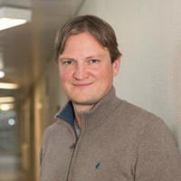
Prof. Alexandre Tkatchenko
Head of the Research Group
Alexandre Tkatchenko is a Professor of Physics and Chair of Theoretical Chemical Physics at Uni.lu. Tkatchenko also holds a distinguished visiting professor position at the Technical University of Berlin and has co-founded two deeptech startups. He has delivered more than 450 invited talks, seminars and colloquia worldwide and served on the editorial boards of four society journals: Science Advances (AAAS), Physical Review Letters (APS), Chemical Science (RSC), and the Journal of Physical Chemistry Letters (ACS). Tkatchenko has received a number of awards, including APS Fellow from the American Physical Society, Fellow of the Royal Society of Chemistry (FRSC), Gerhard Ertl Young Investigator Award of the German Physical Society, Dirac Medal from the World Association of Theoretical and Computational Chemists (WATOC), Feynman prize from the Foresight Institute, van der Waals prize of the international conference on non-covalent interactions (ICNI), and five flagship grants from the European Research Council: a Starting Grant in 2011, a Consolidator Grant in 2017, an Advanced Grant in 2022, and Proof-of-Concept Grants in 2020 and 2023. During free time, he tinkers with both gravity and quantum mechanics.
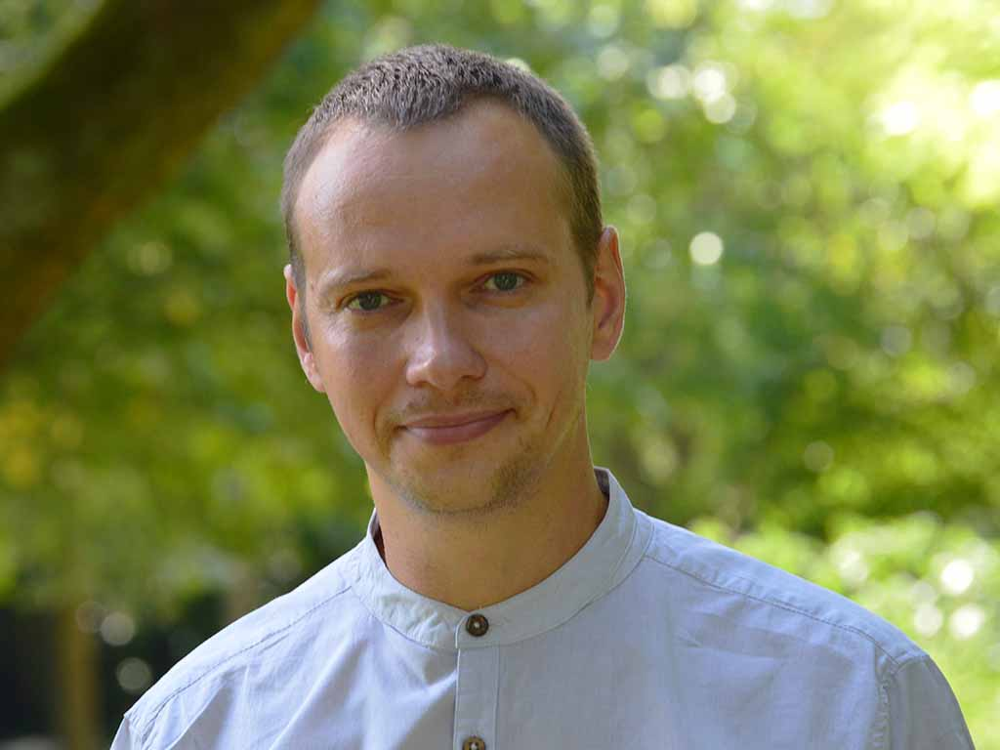
Igor Poltavskyi
Research Scientist; Team Leader on Machine Learning
Research Interests: Statistical physics, imaginary-time path integral methods, nuclear quantum effects, ab initio simulations
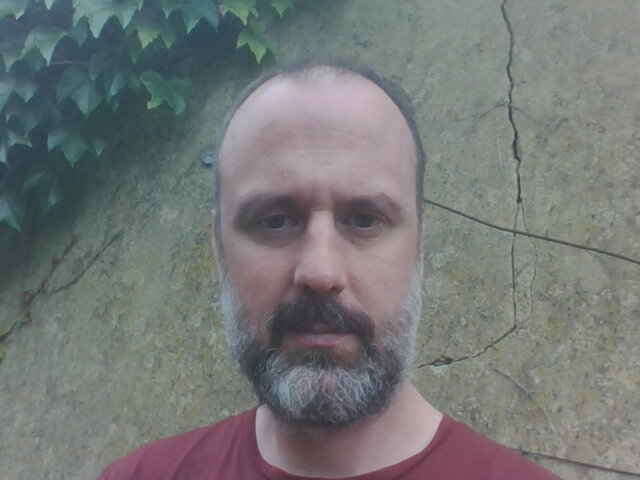
Josh Berryman
Research Scientist; Team Leader on Biomolecular Modeling
Josh Berryman has lifelong commitments to machine learning and to interdisciplinary physics, his highlight achievements include pioneering the use of neural networks for Go in 2000, developing multimedia-capable wireless devices at Imagination Technologies, doing a PhD at Leeds University in biomolecular modelling in 2010, and proposing and verifying a mechanism for COVID neurotoxicity in 2022. He is a member of the college of fellows of Luxembourg's Institute for Advanced Studies, and has won and managed multiple Luxembourgish research grants including CORE and CORE Junior, as well as EU-JPND funding for investigating the overlap between COVID and neurodegenerative disease [covaminf.org].
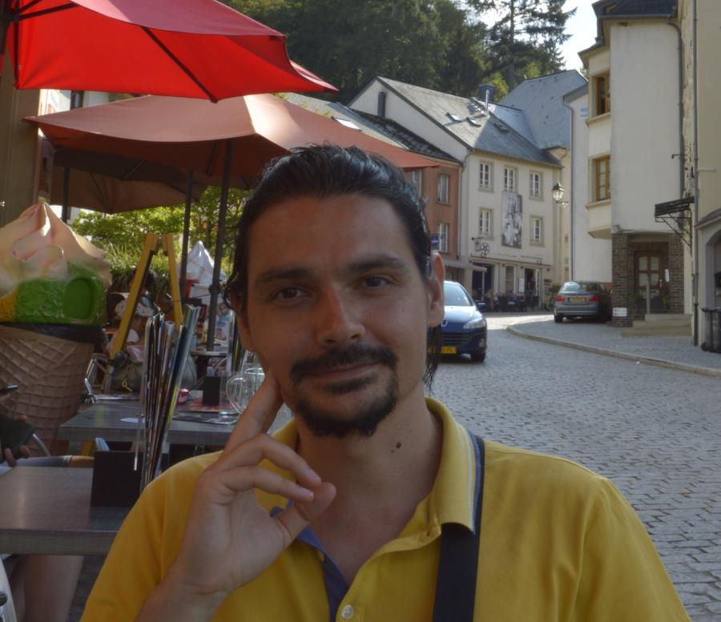
Matteo Barborini
Research Scientist; Team Leader on HPC and Computational Quantum Mechanics
Researcher in Computational Chemical Physics working at the HPC Platform of the University of Luxembourg with many years of experience in the development and implementation of quantum Monte Carlo methods, and in the application of several Computational Methods in Quantum Chemistry and Solid State Physics. During his career he contributed to the development of Prof. Sandro Sorella's code TurboRVB and since 2017 he has been the initiator and main developer of the Quantum MeCha (QMeCha) quantum Monte Carlo package. His main interest is in the development of explicitly correlated wave functions for the solution of the many-body time independent Schrodinger equation for molecular systems. Recently, he has contributed to the supervision of PhD students in projects related to Molecules-Positron meta-stable states and Molecules-QDOs embedding procedures.
Matteo Gori
Research Scientist; Team Leader for Statistical Mechanics
Matteo Gori is a theoretical physicist exploring the interplay between statistical mechanics, quantum-classical mixed dynamics, and many-body van der Waals interactions in complex systems. His research focuses on uncovering how electrodynamic interactions—both classical and quantum—govern the dynamical organization of biomolecular systems. By combining differential geometry, quantum field theory, and advanced statistical methods with numerical simulations, he investigates emergent collective phenomena, bridging fundamental physics with real-world biological complexity.
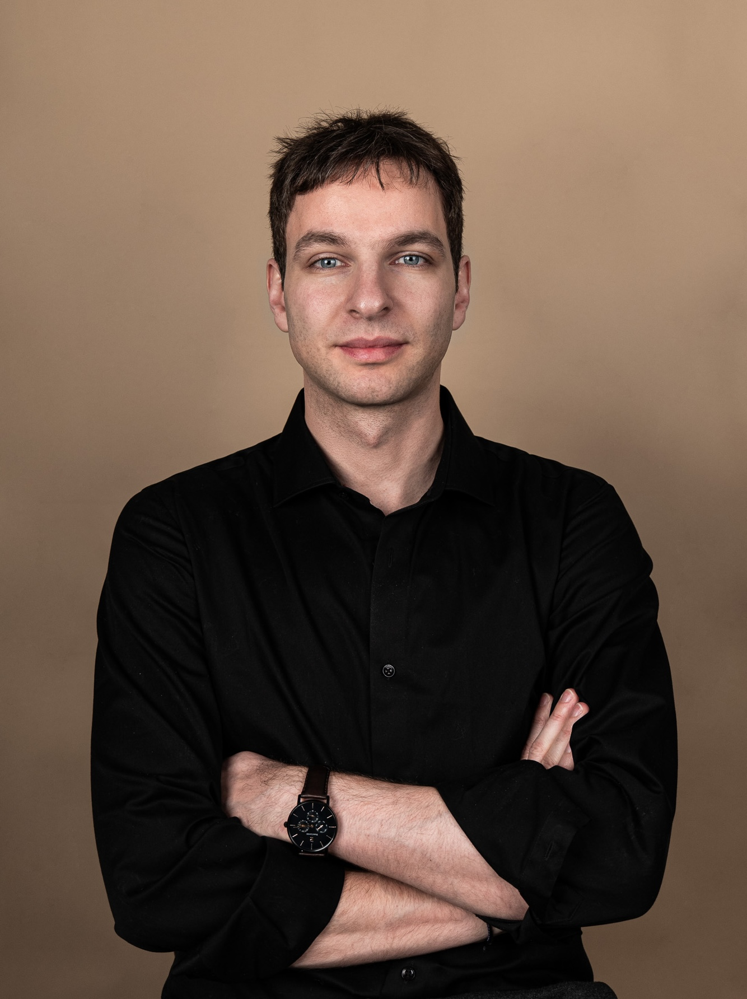
Matthieu Sarkis
Research Scientist; Team Leader for Theoretical Quantum Mechanics
His research focuses on multipartite entanglement in quantum information theory and the application of quantum machine learning to quantum chemistry, with a particular emphasis on long-range interactions. His work explores fundamental questions at the intersection of quantum many-body physics and quantum information. He is also interested in QFT and in particular Conformal Field Theories in 2 dimensions.
Tobias Schäfer
Research Scientist; Team Leader on Computational Quantum Chemistry for Materials Science
Tobias Schäfer is a theoretical physicist working on many-electron correlation in solids and molecules, with a focus on periodic coupled cluster theory, wavefunction embedding, and reduced-cost strategies that make correlated methods applicable to realistic systems. He received his PhD from the University of Vienna under Georg Kresse and then worked at TU Wien in the group of Andreas Grüneis, as assistant professor and as PI of an FWF ESPRIT grant. He contributes to the plane-wave codes VASP and DFTK and to Cc4s, a massively parallel coupled cluster solver. He applies these methods to surface adsorption and heterogeneous catalysis, metals and oxides, solid electrolytes, and noncovalent interactions in large molecules. In the TCP group, he connects coupled cluster theory with machine learning: he provides coupled cluster reference data to train and validate machine-learning force fields, and uses these data to assess density-functional approximations, including many-body dispersion, across a broad range of materials.
Dahvyd Wing
Post-Doc
Current interests: Development of interatomic potentials for large systems using neural networks combined with simple models of long-range physics, such as the many-body dispersion (MBD) method
Reza Karimpour
Post-Doc
Have you ever wondered how invisible quantum forces shape the world around us? I do, every day! I'm a theoretical physicist exploring the forces and interactions that emerge from quantum mechanical fluctuations of electromagnetic and matter fields. My research, grounded in quantum electrodynamics and quantum field theory, covers a range of fascinating topics, from the Casimir effect in curved spaces and/or between macroscopic objects to Casimir-Polder and van der Waals forces in atomic, molecular, and low-dimensional material systems. I also investigate how external bodies and fields influence intermolecular interactions. While my work is rooted in theory, I like thinking about how these quantum effects could be observed in real-world experiments. What would it take to measure them? How could we design experiments to test these predictions? These questions drive my curiosity and motivate my research.
Naziha Tarannam
Post-Doc
I have obtained my PhD at the Ben-Gurion University of the Negev, Israel in 2022 under the supervision of Prof. Sebastian Kozuch. During my PhD, I focused on developing a quantum chemical model for assessing the kinetics of catalytic cycles and applying it to various organometallic and non- covalent organocatalytic processes. After submitting my PhD thesis, I worked with Prof. Dan T. Major at Bar-Ilan University, Israel, on a short-term postdoctoral position, where I investigated the hydrolysis of toxic nerve agents occurring at the active site of the enzyme Phosphotriesterase. In October, 2024, I joined the TCP group at the University of Luxembourg as a Postdoctoral researcher. My current research interests include developing and refining Machine Learning Force Fields (MLFFs) for accurate depiction of diverse biomolecular dynamics, in comparison to classical force fields. Additionally, I am interested in understanding the role of long-range van der Waals interactions in large biomolecules.
Upala Mukhopadhyay
Post-Doc
Upala Mukhopadhyay is a cosmologist exploring various inter-connected topics in cosmology, e.g., Dark Energy, Dark Matter, modified gravity, 21cm Hydrogen line in reionization epoch, Primordial Black Holes, Gravitational Waves etc. Her research mainly focuses on the theoretical and phenomenological study of the late time acceleration of the Universe, Dark Energy and cosmic tensions (namely, the Hubble tension, the S8 tension, the tension of high redshift massive galaxies reported by James Webb Space Telescope). Along with analytical calculations, she also analyses large cosmological data sets related to type-Ia supernovae, baryon acoustic oscillations, cosmic microwave background, growth of cosmic structures etc. Since cosmology have arrived in a data driven era, she is interested to explore machine learning techniques in cosmology to better understand the unknown components of our Universe by unifying experimental results and theoretical aspects.
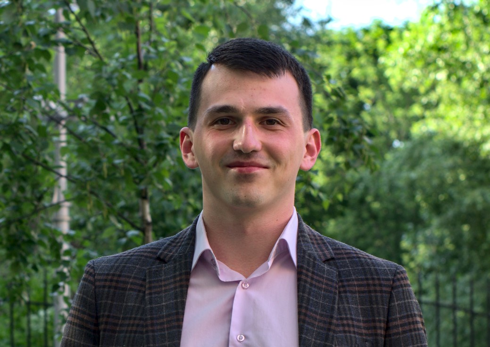
Almaz Khabibrakhmanov
Post-Doc
I graduated from the Moscow Institute of Physics and Technology (MIPT) in 2020, where I developed a strong background in chemical physics and computational materials science. In 2021, I joined the research group of Prof. Alexandre Tkatchenko at the University of Luxembourg, where I have recently completed my PhD. My doctoral research focused on designing simple yet accurate models for van der Waals (vdW) dispersion interactions using quantum Drude oscillators (QDOs). One of the key outcomes was the development of universal interatomic vdW-QDO potentials – efficient tools that have already found practical applications in machine-learning force fields (MLFFs), helping to model long-range interactions typically missing from neural network potentials. On a more fundamental level, my work revealed how vdW dispersion can polarize electron density – an effect often overlooked but critical for large, polarizable systems. These insights open exciting opportunities for developing next-generation "dispersion-consistent" density functionals. Currently, I am continuing this line of research as a short-term PostDoc in the group, with a focus on bridging the gap between accurate quantum mechanical models and practical applications in (bio)molecular simulations.
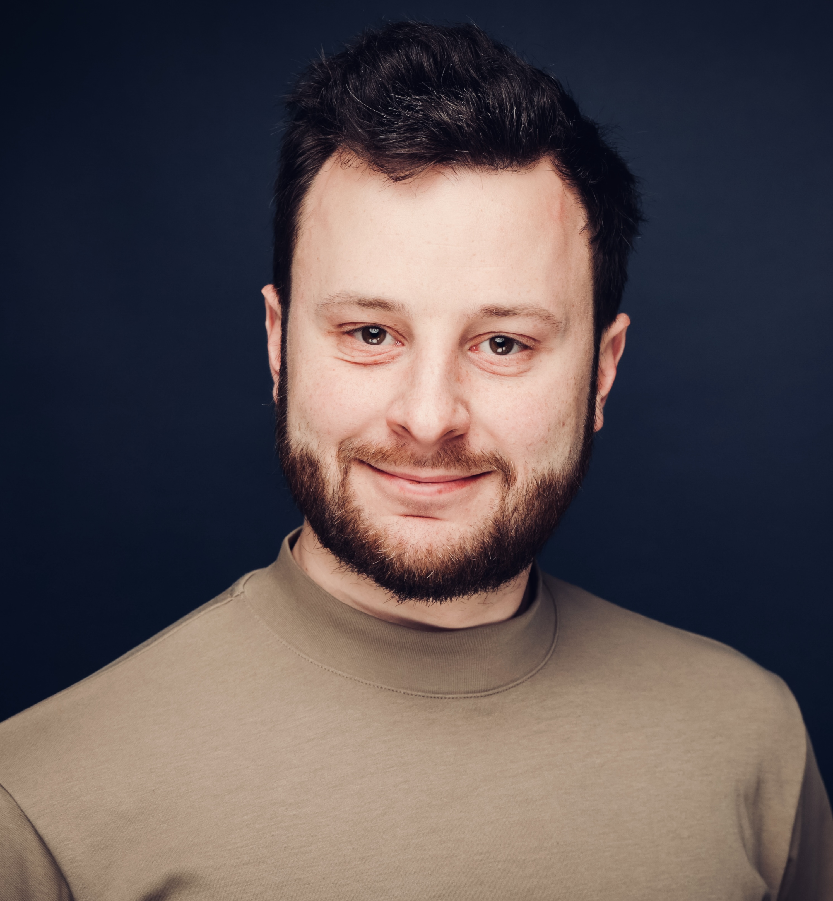
Evgeny Moerman
Post-Doc
Evgeny Moerman is a computational chemist, with a background in development and application of ab initio electronic structure methods including density functional theory and wave function methods for molecules and periodic solids. Interested in applying his expertise to real-world problems particularly in collaboration with industrial partners and experimental collaborators, he joined Alexandre Tkatchenko's group in May 2025 after the completion of his PhD at the Fritz-Haber-Institut Berlin. His research focusses amongst others on the investigation of (bio)chemical reactivity using state-of-the-art machine learning force fields (MLFFs), investigation of dispersion-corrected density functional theory for practical applications in materials science, and the extension of universal MLFFs to reliably model inorganic-organic hybrid materials.
Miguel Gallegos Gonzalez
Post-Doc
Miguel Gallegos is a researcher in Theoretical and Computational Chemistry. He earned his Bachelor’s degree in Chemistry (2018), a Master’s in Chemistry and Sustainable Development (2019), and a Master’s in Theoretical Chemistry and Computational Modeling (2021) from the University of Oviedo, where he also completed his Ph.D. in 2024 under the supervision of Prof. Ángel Martín Pendás. His doctoral work focused on real-space chemical analyses, advancing the framework of Quantum Chemical Topology (QCT) through the theory of Atoms in Molecules (QTAIM) and energy partitioning techniques such as Interacting Quantum Atoms (IQA), while exploring their synergy with Artificial Intelligence to predict complex chemical properties. He is currently a Marie Skłodowska-Curie Actions (MSCA) fellow working on the Local Chemical AI project, which develops transferable and interpretable machine learning models based on real-space partitioning. By leveraging QTAIM and IQA, his research aims to construct physically grounded local ML kernels with applications in drug design, transferable ML Force Fields, and the prediction of quantum chemical properties in complex systems.
Xiaoyun Lin
Post-Doc
Driven by green and sustainable energy imperatives, Her research interests focus on physics-informed, machine learning (ML)-accelerated electrochemical materials design. Her academic background spans theoretical chemistry, machine learning, electrochemical materials, density functional theory, and chemical engineering. During her PhD at Tianjin University, she developed interpretable machine-learning methods to rapidly screen vast candidate pools for optimal electrocatalysts, deliberately avoiding black-box approaches in order to extract underlying physical insights. More recently, her work has expanded beyond thermodynamic property screening to encompass kinetic process engineering, for example MLFF-accelerated studies of Li-ion diffusion in solid-state electrolytes. At the same time, she is advancing generative models to overcome the limits of conventional forward design and more effectively explore global chemical space.
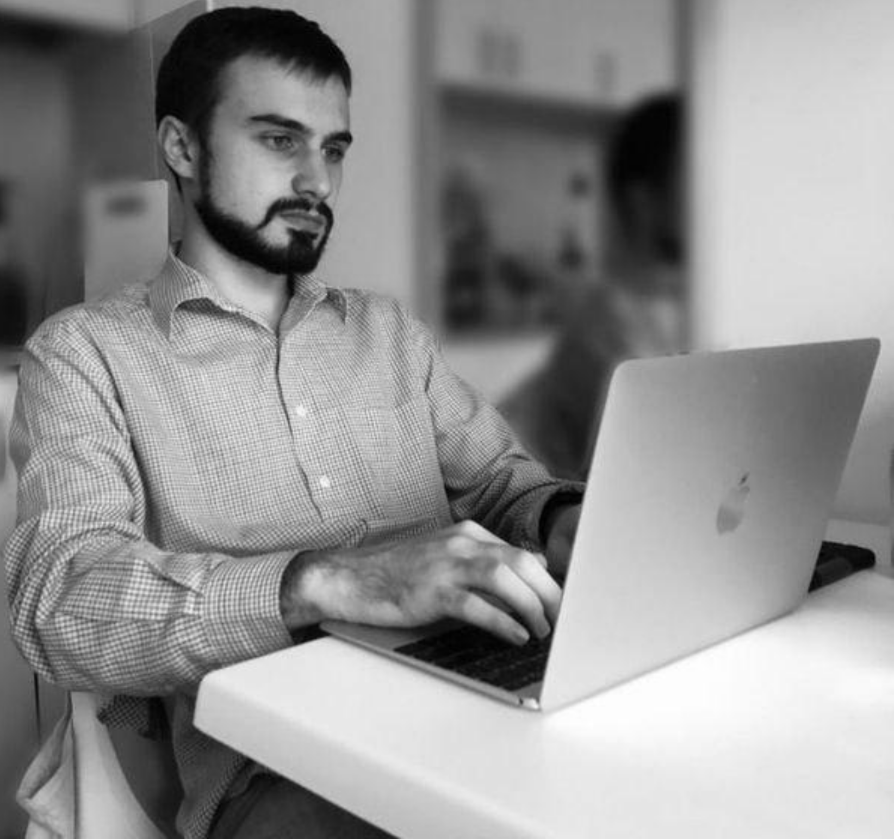
Anton Charkin-Gorbulin
Post-Doc
Current Interests: Development of machine learning force fields to study layered halide perovskites in collaboration with the University of Mons.
Florian Brünig
Post-Doc
Florian Brünig is a theoretical physicist trained at Freie Universität Berlin with a strong focus on molecular biophysics. During his PhD he worked on simulations and stochastic modelling of proton dynamics and vibrational spectroscopy in water and biological environments as an integral part of the Collaborative Research Center 1078 “Protonation Dynamics in Protein Systems”. His investigation of large protein complexes in experiments during the BSc, and the analysis of electron tomography data of single cells at Zuse Institute add to his broad background on biophysical research. His several publications showcase his expertise across various fundamental methods in statistical physics, i.e. linear response, projection and rare-event sampling, in combination with quantum chemical simulations techniques, as well as his effort in active interdisciplinary collaboration with experimental groups. The work has been honoured by several invited presentations, including at international conferences and universities, in addition to regular participation at numerous international conferences and workshops. His current interests extend to machine learning models for atomistic simulations of bio and soft matter systems and modeling of long-range interactions.
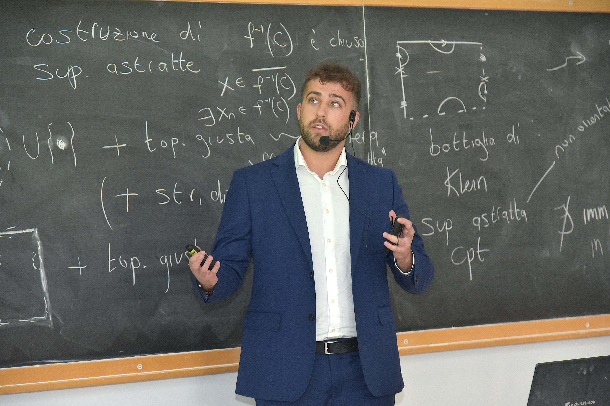
Mathias Hilfiker
PhD Student
Research Topics: Machine-learned quantum Force Fields for molecule-protein interactions.
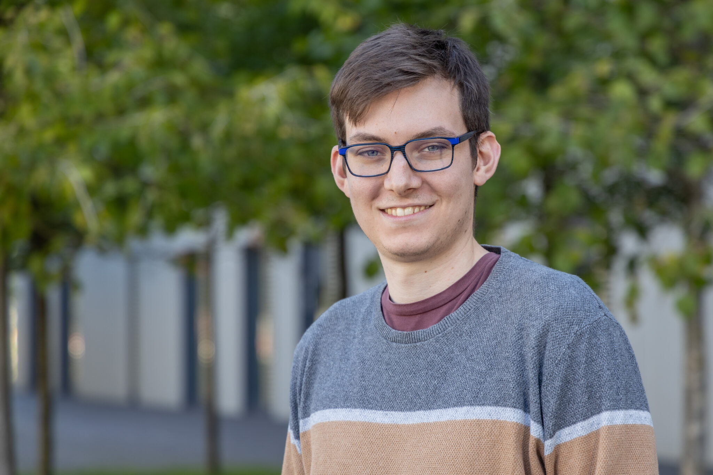
Sergio Suárez-Dou
PhD Student
My research focuses on developing and applying machine learning force fields (MLFF) to study complex molecular systems with quantum-level accuracy and enhanced computational efficiency. By combining molecular dynamics simulations, statistical physics, and data-driven methodologies, I aim to understand the conformational space of biomolecules, driving advancements in drug discovery and biomolecular design. I develop MARS, a machine-learned force field framework for automated conformational sampling, vibrational spectroscopy and microsolvation. I would like to bridge theoretical chemistry with real-world challenges, providing predictive insights into the molecular interactions that reveal biological and chemical processes.
Tobias Henkes
PhD Student
As a chemist, my interests lie in the application, analysis, and automation of machine learning models within the field of molecular simulation. After graduating with a B.Sc. in chemistry from Bielefeld University, Germany, I joined the R&D lab of tesa SE in Hamburg. Afterward, I started my master's studies in chemistry at Saarland University, Germany, during which I joined Prof. Dr. Ernzerhof at the Université de Montréal, Canada. Here, I worked on the application of neural networks to density functional theory and novel electronic structure methods. Since my master's thesis, also completed in the TCP group, I have focused my research on machine learning force fields (MLFFs). In addition to the analysis of so-called foundational MLFFs, a large part of my work is concerned with the automatic and efficient construction of MLFF models and datasets using active learning.
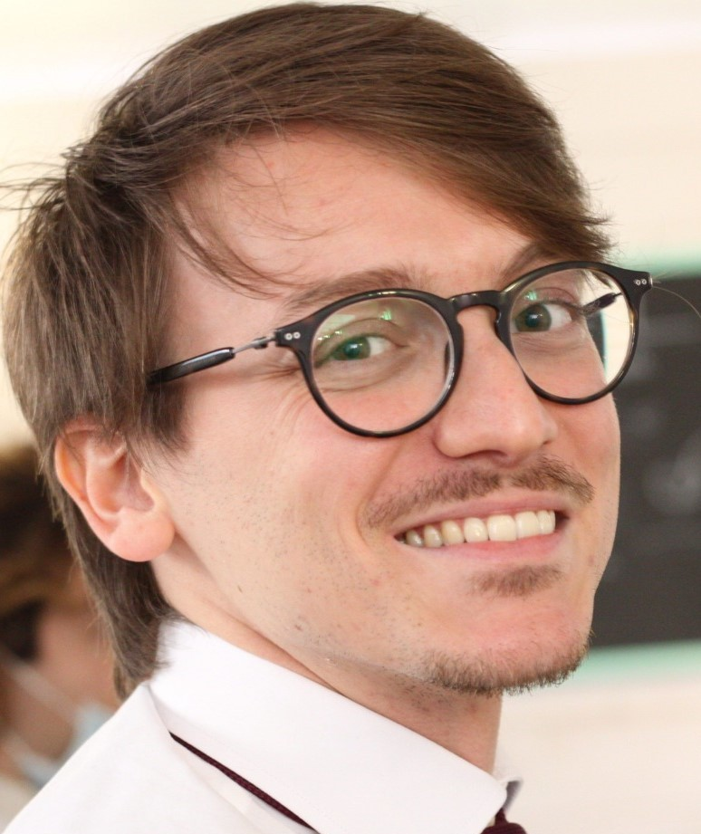
Giuseppe Mansi
PhD Student
I am a theoretical physicist with a strong interest in the interface between gravity and quantum mechanics. My Master's degree research was dedicated to semiclassical gravity, where I investigated the J. Oppenheim's approach of stochastic gravity. My current research focus has naturally evolved towards the core principles of quantum mechanics, now working primarily on quantifying and understanding quantum entanglement for multipartite infinite dimensional systems.